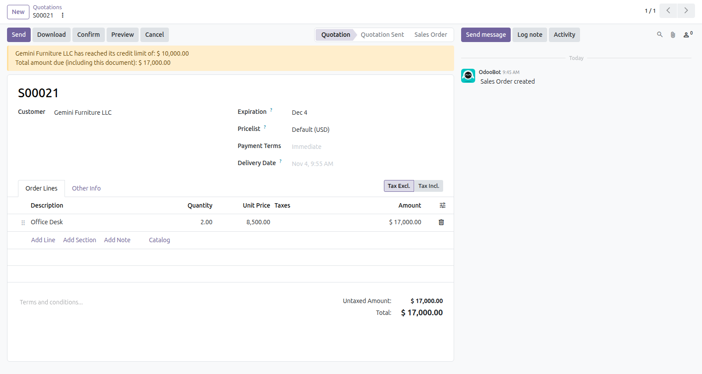
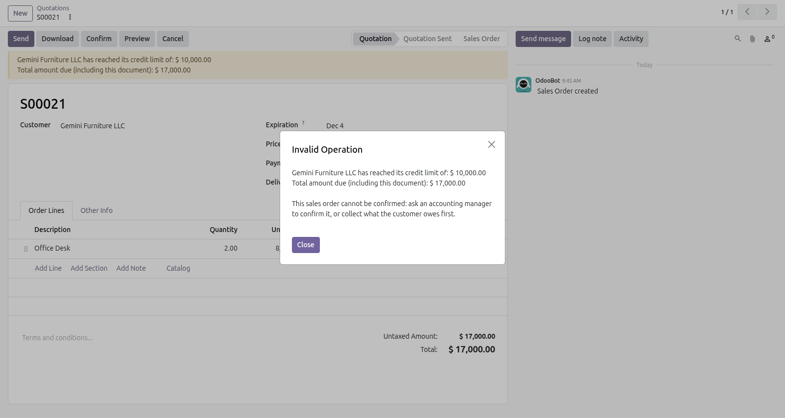

Catch a customer going over the credit limit when the order is confirmed, before you deliver, not when the invoice is posted.
An add-on of Customer Credit Limit (om_credit_limit). It installs by itself when both that module and Sales are present.
A quotation that takes the customer over the limit cannot be confirmed by a salesperson.
Users of the Override the Credit Limit group can still confirm it, and accounting managers have it already.
Every override is recorded in the chatter of the order. Orders confirmed together add up.
Odoo shows the warning on the quotation. With this option, the salesperson cannot go past it.

The warning of Odoo on a quotation over the limit.

Confirming it: refused for a salesperson without the override.
What to expect before you install.
Questions? Odoo Mates · odoomates@gmail.com